15 Puzzle 15 Puzzle
Sam Lloyds classsic sliding block puzzle.
 After Image After Image
Negative color appearance.
 Antenna Tree Antenna Tree
Antenna Tree curve.
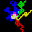 Arc Steps
Random path created from series of 90 degree arcs.
 Arc Wave Arc Wave
Series of decreasing sectors.
 Assimilation Assimilation
Color blending.
 Bifurcation Diagram Bifurcation Diagram
Plot of f(x)=kx(1-x)
 Binary Switch Binary Switch
A divide by two selector switch.
 Blancmange Curve Blancmange Curve
Blancmange curve.
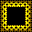 Border
Double border frame.
 Bulge Bulge
Bulging grid.
Butterfly Curve
The butterfly curve.
 C_Curve C_Curve
Fractal C_Curves, orders 0-9.
 Cafe Wall Cafe Wall
Distorted tile pattern.
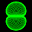 Cartioid Curve
Circles of touching radii.
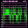 Chaos Theory
Graphic representation of the chaotic behaviour of a simple equation.
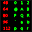 Characters
Draw font characters.
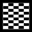 Chequer
Demo column by row grid.
 Chessboard Chessboard
Draw a chessboard.
 Chiral Star Chiral Star
Recursive star gasket.
 Circles Circles
Relative shape sizes.
 Clover Art Clover Art
Random clover leaf/wave shapes.
Clover Leaf/Wave
Draw a clover leaf or wave shape.
 Circles Circles
Recursive circles.
 Condensation Condensation
Expanding water droplets.
 Color Names Color Names
Left right brain confusion.
 Cross Cross
A series of recursive crosses.
Cube
Tumbling cube corners. Shows the kind of maths needed for 3D programming.
 Cubes Cubes
Cubic art sculpture.
 Cube Octahedron 3D Cube Octahedron 3D
Wire frame and balls cube octahedon.
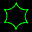 Cycloid Curves
A series of various Cycloid curves.
 Dice 3D Dice 3D
Colored dice, correctly labelled.
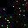 Dots
Fill screen with random dots.
 Dragon Curve Dragon Curve
Folded paper strip Dragon curve, orders 0-11.
 Drain Drain
Water drainage systems.
 Dust Dust
Floating specks of dust gather together.
 Dudeney's Disection Dudeney's Disection
Old puzzle of an oscillating square to triangle disection.
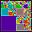 Edge
A recursive edge of tiles.
 Elastic Grids Elastic Grids
Mathematically distorted grids.
 Eye Eye
Random filled sector shapes.
 Face Cube 3D Face Cube 3D
Cube face 'parasols' recursion.
 Fern Fern
A recursive natural leaf shape.
 Ferris Wheels Ferris Wheels
Random three term spirograph patterns.
 Fields Fields
Fields of random stress lines.
 Five Star Five Star
Nested series of 5 pointed stars.
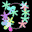 Flora
Scattering of colored flower petals.
 Flowers Flowers
A bunch of flowers demonstrating good use of procedures.
 Fractal Fern Fractal Fern
Chaos Game rendition of a fern.
 Fraser Illusion Fraser Illusion
Twisted vertical lines.
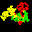 Friendship
Path created from friendship number series.
 Gasket Gasket
Recursive hole removal.
Ginger Bread Man
A linear map in the shape of a gingerbread man.
 GoldSqrs GoldSqrs
Recursive Fibbonacci sized squares fractal.
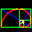 Golden Spiral
A rectangle divided into a series of smaller squares.
 Grate Curve Grate Curve
Recursive plane filling Grate curve.
 Grid Grid
Distorted square grid.
 Grid Art Grid Art
A regular array of assembled squares.
 Haiko Haiko
Japenese verse.
 Harmonograph Harmonograph
Random multi-colored harmonograph patterns.
  Hénon Curves Hénon Curves
Two dimensional quadratic maps.
 Hermann Grid Hermann Grid
Intersecting dark spots.
 Hexagon Hexagon
Distorted figure.
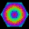 Hexagons
A series of recursive hexagons.
 Hexagrams Hexagrams
Ancient chinese binary fortune telling.
|
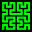 Hilbert Curve
Recursive Hilbert curves.
 Hilbert2 Curve Hilbert2 Curve
Recursive Hilbert2 curves.
 Hopalong Hopalong
Random hopalong function plots.
 Ice Ice
Randomly cracked ice sheet.
 Intertwine Intertwine
Intertwined concentric circles.
 Kam Torus Kam Torus
A quick dot plot image.
 Kanizsa Kanizsa
Illusory floating triangle shape.
 Kite Tree Kite Tree
Tree using kite shape branches.
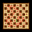 Knight's Tour
Classic knights tour of a chessboard.
 Knight's Tour 3D Knight's Tour 3D
Cube 4x4x4 array knight's tour.
 Knuth Curve Knuth Curve
Recursive plane filling Knuth curve.
 Koch Curve Koch Curve
Both inside and outside Koch curves.
 Koch (Square) Curve Koch (Square) Curve
Inside and outside Koch square curves.
 L-System Single Rule L-System Single Rule
Seven L-Systems with single F replacement rule.
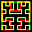 L-System Double Rule
Five L-Systems with single F replacement rule.
 Lace Curve Lace Curve
Lace plane filling curve.
 Langton's Ant Langton's Ant
Simple 2D Turing machine.
 LED Display LED Display
Scrolling dot matrix text.
 Lens Lens
Lens shapes.
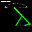 Linkages
Mechanical straight line motion.
 Lune Trees Lune Trees
Tress (60 & 90) using lune branch shapes.
 Marbles Marbles
Op art distortion.
 Maze Maze
Self creating random mazes.
Mandelbrot
Classic Mandelbrot image.
 Martin Martin
A patch work quilt of extended squares.
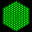 Mesh
Regular lattice.
 Microbes Microbes
Animated pond life.
 Mobius Band Mobius Band
Twisted paper loop.
Mystic Rose
Linking evenly spaced points on a circle.
 Negative Circles Negative Circles
Floating shapes.
 Neon Neon
Square patch of color.
 Oct Tiles Oct Tiles
Random pattern edge matching tiles.
 Orbinson Orbinson
Distorted square.
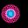 Orbits
Spirograph type patterns generated by orbiting turtles.
 Oscilloscope Oscilloscope
Display of rotating sine waves from the days of old oscilloscopes.
 Partridge Puzzle Partridge Puzzle
Multiple square disection.
 Peano Cesaro Peano Cesaro
Variable angle Peano curve.
Peano Curve
Recursive plane filling Peano curve.
Peano2 Curve
Recursive plane filling second type of Peano curve.
 Peano Gosper Curve Peano Gosper Curve
Recursive hexagonal plane filling curve.
Pebbles
Randoml pebble shapes.
 Pentagons Pentagons
Series of recursive pentagons.
 Petals Petals
A series of 7 flowers.
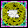 Pi Island
A random calculation of pi.
 Plastic Number Plastic Number
A logarithmic spiral of increasing triangles.
 Platonic Solid Platonic Solid
All 5 regular platonic solids.
Please Wait
Randomly generated computer excuses.
 Polygon Weaver Polygon Weaver
Two random polygons are woven together.
 Polygons Polygons
A set of nested polygons.
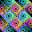 Popcorn
Strange quilted popcorn fractal.
 Pursuit Curve Pursuit Curve
Turtle following turtle following turtle...
 Rainbow Rainbow
Six colored arcs.
 Random Lines Random Lines
A dozen random lines with co-ordinate labels.
 Revolve Revolve
Two revolving rings.
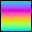 RGB Colors
See the color effects of different AngCol procedures.
 RGB Swatches RGB Swatches
Array of RGB color values.
 Ring Wave Ring Wave
Standing sine wave on a circular ring.
Rings
Interlocking rotating rings puzzle.
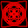 Rose
Eight logo spirals.
Rose Curves
Various rose curves.
 Seaweed Seaweed
Waving tile pattern illusion.
Screen Saver
A couple of large graphic stars in a night sky.
 Segments Segments
Similar segment shapes.
 Shapes Shapes
Outline shapes with labelled arch and arcs.
|
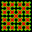 Sierpinski Curve
Recursive plane filling 4 fold Sierpinski curve.
 Sierpinski Gasket Sierpinski Gasket
Recursive generation of sierpinski gaskets.
 Sierpinski Triangle Sierpinski Triangle
Recursive triangular plane filling curve.
 Scintillate Scintillate
Scintillating tile pattern.
 Shapes Confetti Shapes Confetti
Random pile of colored shapes.
 Sine Sine
Sine wave illusion.
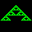 SingleLine CA
Line by line.
 Snowflakes Snowflakes
Random ice crystal patterns.
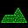 Sphinx
Repeating sphinx shape.
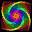 Spinning Squares
A series of recursive squares one inside the other.
 Spiral Spiral
Concentric circle spirals.
 Spiral of Squares Spiral of Squares
A series of descending squares.
Spiral Lines
A variety of spiral forms from recursive line lengths.
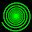 Spirals (Curvature)
Archimedies and logarithmic spirals.
 Spirals (Polar) Spirals (Polar)
Archimedies, Fermat and logarithmic spirals.
Spiro
Random generation of second order Spirograph curves.
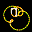 SpiroExplorer
Experiment and test out spirograph parameters.
 SpiroCircle SpiroCircle
Morphing display of outer circle to different spiro / cycloid patterns.
 Spirographs Spirographs
Traditional Spirograph patterns.
 SpiroLaterals SpiroLaterals
Traditional repeating move and turn patterns.
 Squares Center Squares Center
A series of recursive centered squares.
 Squares Corner Squares Corner
A series of recursive corner squares.
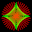 Star
A couple of large graphic stars in a night sky.
 StarMorph StarMorph
Evolving red and green star shape, moving and rotating.
 String String
String pictures.
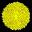 Sunflower
Entwined logarithmic spirals of a sunflower head.
 Surface Surface
3D surface grids.
 Swatches Swatches
XLogo colors 0 to 16.
 Tangle Curves Tangle Curves
Random neurotic knotted curves, optimised.
 Tango Tango
Random self circling red and green curves.
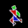 Tangram
Tangram pieces sliding between random pictures.
 Tile Array Tile Array
Various tile arrays.
 Tile Pattern Tile Pattern
Various tile patterns.
 Tracker Tracker
On screen tracking of any program variable.
 Tree Basic Tree Basic
Simple recursive trees.
 Tree Leaning Tree Leaning
Lop-sided leaning tree.
 Trees Random Trees Random
More natural tree growth.
 Tree Generator Tree Generator
Succession of randomly grown trees.
TreeAnim
Recursive tree animation, branch angle from 0 to 180 degrees.
 Triangular Tree Triangular Tree
Right angled triangle tree.
 Tube Tube
Continuous swaying motion.
 Twisted Cord Twisted Cord
Vertical cords appear to bend.
 Twisted Rose Curve Twisted Rose Curve
Various twisted rose curves.
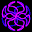 Twisted R C Anim
A series of 20 twisted curves.
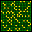 Ulam Spiral
Prime number spiral pattern.
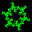 Wanderer
Complex spikey trails from simple initial values.
 Wanderer Opt Wanderer Opt
Optimised to scale patterns to screen.
 Wandering Trails Wandering Trails
Randomly roaming turtle.
 Wave Wave
Continueous wave motion.
 Weeds Weeds
Natural forms weeds, leaves and trees.
 White's Illusion White's Illusion
Gray rectangles appear different colors behind bars.
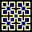 Wirth Curve
Recursive plane filling Wirth curve.
 Wire Shapes Wire Shapes
A random collection of wires.
 X Hair X Hair
Add a X-Hair to any XLogo program.
 XYZ Axis XYZ Axis
Demo of XYZ relative and absolute positions.
YinYang
YinYang symbol.
 ZigZag ZigZag
Distorted lines.
 Zollner Zollner
Distorted horizontal lines in tiled grid.
 Zoom Zoom
Continuous zoom motion.
|